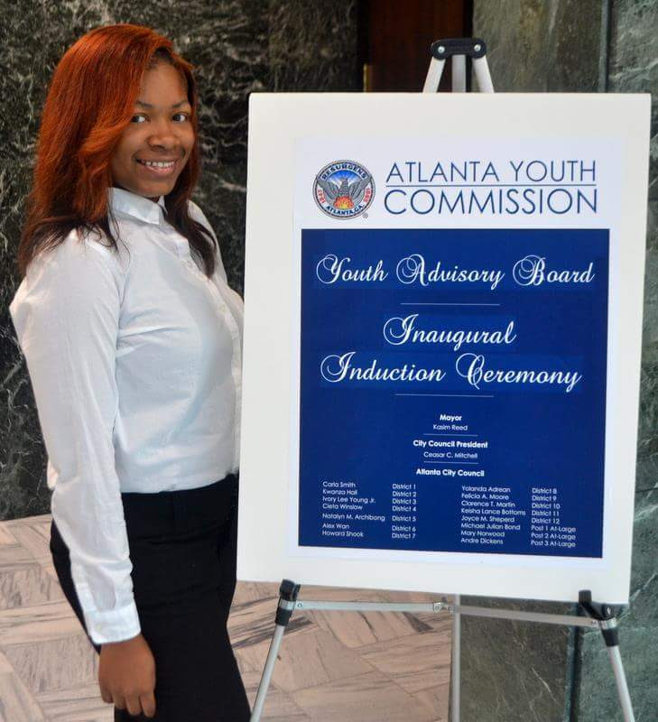
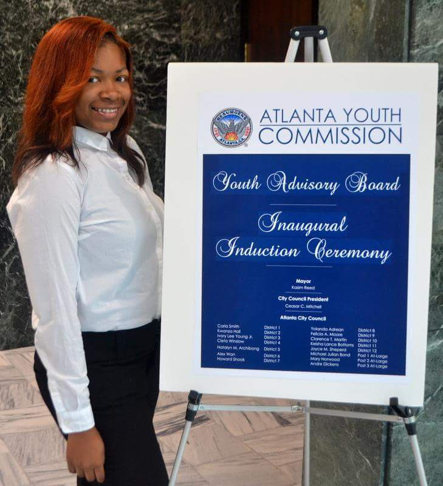

Purpose:
This website was created in an effort to give highschool students in Atlanta access to important information regarding their future.
About Us:
Miranda Colbert is a 17 year old
rising senior at Carver High School. She is a member of the Atlanta Youth Advisory Board for the Atlanta City Council. In her spare time, she enjoys learning about coding. Miranda is currently in the dual enrollment program at Atlanta Tech where she majors in computer science.

Kalee Wiley is currently senior at Parkview high school. Usually, Kalee is a nice girl that strives to achieve in anything that comes her way. In her spare time, she is usually reading a book, and she most likely always have a book in her hands. Her hobbies include drawing, and creating jewelry for other people. In the future, she hopes to travel the world, and experience all the diverse culture.
Although, Kalee does not know what she wants to do with her life, she drives to get her mark on the world.

Miranda Colbert is a 17 year old
rising senior at Carver High School. She is a member of the Atlanta Youth Advisory Board for the Atlanta City Council. In her spare time, she enjoys learning about coding. Miranda is currently in the dual enrollment program at Atlanta Tech where she majors in computer science.

Kalee Wiley is currently senior at Parkview high school. Usually, Kalee is a nice girl that strives to achieve in anything that comes her way. In her spare time, she is usually reading a book, and she most likely always have a book in her hands. Her hobbies include drawing, and creating jewelry for other people. In the future, she hopes to travel the world, and experience all the diverse culture.
Although, Kalee does not know what she wants to do with her life, she drives to get her mark on the world.